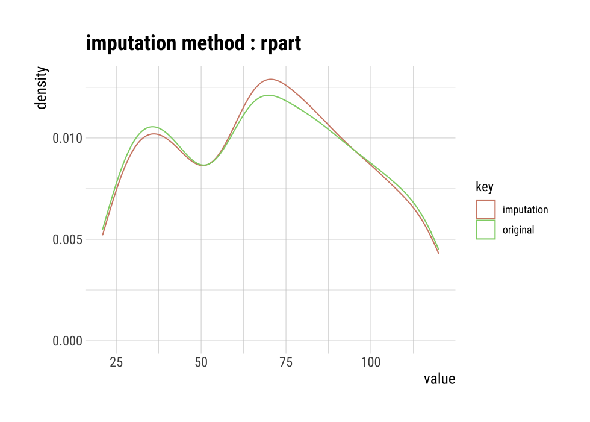
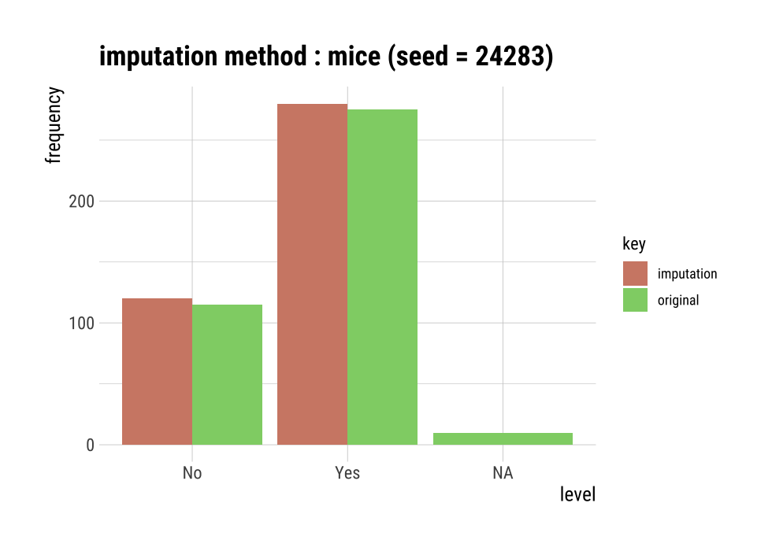
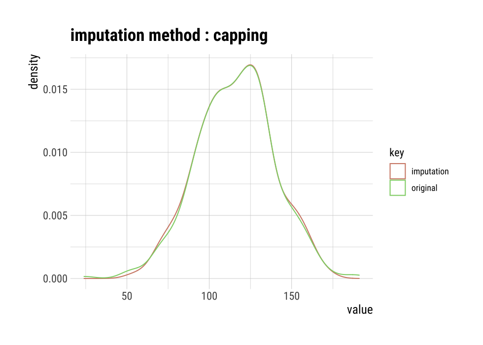
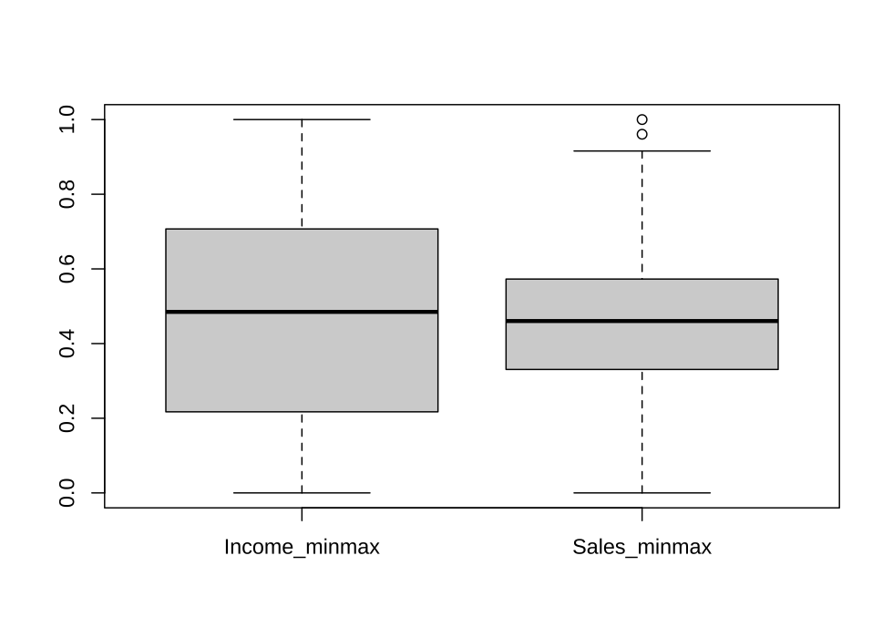
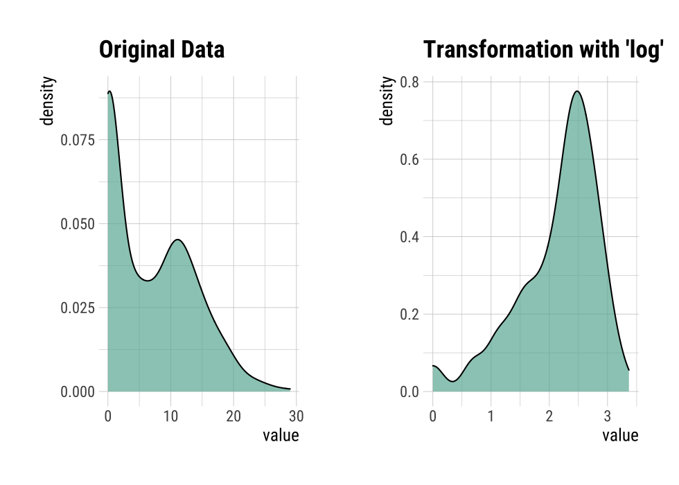

Introduce dlookr package for derive new variables or perform variable transformations.
After you have acquired the data, you should do the following:
The dlookr package makes these steps fast and easy:
This document introduces data transformation methods provided by the dlookr package. You will learn how to transform of tbl_df data that inherits from data.frame and data.frame with functions provided by dlookr.
dlookr increases synergy with dplyr. Particularly in data transformation and data wrangle, it increases the efficiency of the tidyverse package group.
To illustrate the basic use of data transformation in the dlookr package, I use a Carseats dataset. Carseats in the ISLR package is simulation dataset that sells children’s car seats at 400 stores. This data is a data.frame created for the purpose of predicting sales volume.
'data.frame': 400 obs. of 11 variables:
$ Sales : num 9.5 11.22 10.06 7.4 4.15 ...
$ CompPrice : num 138 111 113 117 141 124 115 136 132 132 ...
$ Income : num 73 48 35 100 64 113 105 81 110 113 ...
$ Advertising: num 11 16 10 4 3 13 0 15 0 0 ...
$ Population : num 276 260 269 466 340 501 45 425 108 131 ...
$ Price : num 120 83 80 97 128 72 108 120 124 124 ...
$ ShelveLoc : Factor w/ 3 levels "Bad","Good","Medium": 1 2 3 3 1 1 3 2 3 3 ...
$ Age : num 42 65 59 55 38 78 71 67 76 76 ...
$ Education : num 17 10 12 14 13 16 15 10 10 17 ...
$ Urban : Factor w/ 2 levels "No","Yes": 2 2 2 2 2 1 2 2 1 1 ...
$ US : Factor w/ 2 levels "No","Yes": 2 2 2 2 1 2 1 2 1 2 ...The contents of individual variables are as follows. (Refer to ISLR::Carseats Man page)
When data analysis is performed, data containing missing values is often encountered. However, Carseats is complete data without missing. Therefore, the missing values are generated as follows. And I created a data.frame object named carseats.
carseats <- ISLR::Carseats
suppressWarnings(RNGversion("3.5.0"))
set.seed(123)
carseats[sample(seq(NROW(carseats)), 20), "Income"] <- NA
suppressWarnings(RNGversion("3.5.0"))
set.seed(456)
carseats[sample(seq(NROW(carseats)), 10), "Urban"] <- NA
dlookr imputes missing values and outliers and resolves skewed data. It also provides the ability to bin continuous variables as categorical variables.
Here is a list of the data conversion functions and functions provided by dlookr:
find_na() finds a variable that contains the missing values variable, and imputate_na() imputes the missing values.find_outliers() finds a variable that contains the outliers, and imputate_outlier() imputes the outlier.summary.imputation() and plot.imputation() provide information and visualization of the imputed variables.find_skewness() finds the variables of the skewed data, and transform() performs the resolving of the skewed data.transform() also performs standardization of numeric variables.summary.transform() and plot.transform() provide information and visualization of transformed variables.binning() and binning_by() convert binational data into categorical data.print.bins() and summary.bins() show and summarize the binning results.plot.bins() and plot.optimal_bins() provide visualization of the binning result.transformation_report() performs the data transform and reports the result.imputate_na()imputate_na() imputes the missing value contained in the variable. The predictor with missing values support both numeric and categorical variables, and supports the following method.
In the following example, imputate_na() imputes the missing value of Income, a numeric variable of carseats, using the “rpart” method. summary() summarizes missing value imputation information, and plot() visualizes missing information.
if (requireNamespace("rpart", quietly = TRUE)) {
income <- imputate_na(carseats, Income, US, method = "rpart")
# result of imputation
income
# summary of imputation
summary(income)
# viz of imputation
plot(income)
} else {
cat("If you want to use this feature, you need to install the rpart package.\n")
}
* Impute missing values based on Recursive Partitioning and Regression Trees
- method : rpart
* Information of Imputation (before vs after)
Original Imputation
n 380.000000 400.00000000
na 20.000000 0.00000000
mean 68.860526 69.05073137
sd 28.091615 27.57381661
se_mean 1.441069 1.37869083
IQR 48.250000 46.00000000
skewness 0.044906 0.02935732
kurtosis -1.089201 -1.03508622
p00 21.000000 21.00000000
p01 21.790000 21.99000000
p05 26.000000 26.00000000
p10 30.000000 30.90000000
p20 39.000000 40.00000000
p25 42.750000 44.00000000
p30 48.000000 51.58333333
p40 62.000000 63.00000000
p50 69.000000 69.00000000
p60 78.000000 77.40000000
p70 86.300000 84.30000000
p75 91.000000 90.00000000
p80 96.200000 96.00000000
p90 108.100000 106.10000000
p95 115.050000 115.00000000
p99 119.210000 119.01000000
p100 120.000000 120.00000000
The following imputes the categorical variable urban by the “mice” method.
iter imp variable
1 1 Income Urban
1 2 Income Urban
1 3 Income Urban
1 4 Income Urban
1 5 Income Urban
2 1 Income Urban
2 2 Income Urban
2 3 Income Urban
2 4 Income Urban
2 5 Income Urban
3 1 Income Urban
3 2 Income Urban
3 3 Income Urban
3 4 Income Urban
3 5 Income Urban
4 1 Income Urban
4 2 Income Urban
4 3 Income Urban
4 4 Income Urban
4 5 Income Urban
5 1 Income Urban
5 2 Income Urban
5 3 Income Urban
5 4 Income Urban
5 5 Income Urban
# result of imputation
urban
[1] Yes Yes Yes Yes Yes No Yes Yes No No No Yes Yes Yes Yes No
[17] Yes Yes No Yes Yes No Yes Yes Yes No No Yes Yes Yes Yes Yes
[33] Yes Yes Yes No No Yes Yes No No Yes Yes Yes Yes Yes No Yes
[49] Yes Yes Yes Yes Yes Yes No Yes Yes Yes Yes Yes Yes No Yes Yes
[65] No No Yes Yes Yes Yes Yes No Yes No No No Yes No Yes Yes
[81] Yes Yes Yes No No No Yes No Yes No No Yes Yes No Yes Yes
[97] No Yes No No No Yes No Yes Yes Yes No Yes Yes No Yes Yes
[113] Yes Yes Yes Yes No Yes Yes Yes Yes Yes Yes No Yes No Yes Yes
[129] Yes No Yes Yes Yes Yes Yes No No Yes Yes No Yes Yes Yes Yes
[145] No Yes Yes No No Yes Yes No No No No Yes Yes No No No
[161] No No Yes No No Yes Yes Yes Yes Yes Yes Yes Yes Yes No Yes
[177] No Yes No Yes Yes Yes Yes Yes No Yes No Yes Yes No No Yes
[193] No Yes Yes Yes Yes Yes Yes Yes No Yes No Yes Yes Yes Yes No
[209] Yes No No Yes Yes Yes Yes Yes Yes No Yes Yes Yes Yes Yes Yes
[225] No Yes Yes Yes No No No No Yes No No Yes Yes Yes Yes Yes
[241] Yes Yes No Yes Yes No Yes Yes Yes Yes Yes Yes Yes No Yes Yes
[257] Yes Yes No No Yes Yes Yes Yes Yes Yes No No Yes Yes Yes Yes
[273] Yes Yes Yes Yes Yes Yes No Yes Yes No Yes No No Yes No Yes
[289] No Yes No No Yes Yes Yes No Yes Yes Yes No Yes Yes Yes Yes
[305] Yes Yes Yes Yes Yes Yes Yes Yes No Yes Yes Yes Yes No No No
[321] Yes Yes Yes Yes Yes Yes Yes Yes Yes Yes No Yes Yes Yes Yes Yes
[337] Yes Yes Yes Yes Yes No No Yes No Yes No No Yes No No No
[353] Yes No Yes Yes Yes Yes Yes Yes No No Yes Yes Yes No No Yes
[369] No Yes Yes Yes No Yes Yes Yes Yes No Yes Yes Yes Yes Yes Yes
[385] Yes Yes Yes No Yes Yes Yes Yes Yes No Yes Yes No Yes Yes Yes
attr(,"var_type")
[1] categorical
attr(,"method")
[1] mice
attr(,"na_pos")
[1] 33 36 84 94 113 132 151 292 313 339
attr(,"seed")
[1] 24283
attr(,"type")
[1] missing values
attr(,"message")
[1] complete imputation
attr(,"success")
[1] TRUE
Levels: No Yes
# summary of imputation
summary(urban)
* Impute missing values based on Multivariate Imputation by Chained Equations
- method : mice
- random seed : 24283
* Information of Imputation (before vs after)
original imputation original_percent imputation_percent
No 115 120 28.75 30
Yes 275 280 68.75 70
<NA> 10 0 2.50 0
# viz of imputation
plot(urban)

The following example imputes the missing value of the Income variable, and then calculates the arithmetic mean for each level of US. In this case, dplyr is used, and it is easily interpreted logically using pipes.
# The mean before and after the imputation of the Income variable
carseats %>%
mutate(Income_imp = imputate_na(carseats, Income, US, method = "knn")) %>%
group_by(US) %>%
summarise(orig = mean(Income, na.rm = TRUE),
imputation = mean(Income_imp))
# A tibble: 2 x 3
US orig imputation
<fct> <dbl> <dbl>
1 No 65.8 66.1
2 Yes 70.4 70.5imputate_outlier()imputate_outlier() imputes the outliers value. The predictor with outliers supports only numeric variables and supports the following methods.
imputate_outlier() imputes the outliers with the numeric variable Price as the “capping” method, as follows. summary() summarizes outliers imputation information, and plot() visualizes imputation information.
price <- imputate_outlier(carseats, Price, method = "capping")
# result of imputation
price
[1] 120.00 83.00 80.00 97.00 128.00 72.00 108.00 120.00 124.00
[10] 124.00 100.00 94.00 136.00 86.00 118.00 144.00 110.00 131.00
[19] 68.00 121.00 131.00 109.00 138.00 109.00 113.00 82.00 131.00
[28] 107.00 97.00 102.00 89.00 131.00 137.00 128.00 128.00 96.00
[37] 100.00 110.00 102.00 138.00 126.00 124.00 77.00 134.00 95.00
[46] 135.00 70.00 108.00 98.00 149.00 108.00 108.00 129.00 119.00
[55] 144.00 154.00 84.00 117.00 103.00 114.00 123.00 107.00 133.00
[64] 101.00 104.00 128.00 91.00 115.00 134.00 99.00 99.00 150.00
[73] 116.00 104.00 136.00 92.00 70.00 89.00 145.00 90.00 79.00
[82] 128.00 139.00 94.00 121.00 112.00 134.00 126.00 111.00 119.00
[91] 103.00 107.00 125.00 104.00 84.00 148.00 132.00 129.00 127.00
[100] 107.00 106.00 118.00 97.00 96.00 138.00 97.00 139.00 108.00
[109] 103.00 90.00 116.00 151.00 125.00 127.00 106.00 129.00 128.00
[118] 119.00 99.00 128.00 131.00 87.00 108.00 155.00 120.00 77.00
[127] 133.00 116.00 126.00 147.00 77.00 94.00 136.00 97.00 131.00
[136] 120.00 120.00 118.00 109.00 94.00 129.00 131.00 104.00 159.00
[145] 123.00 117.00 131.00 119.00 97.00 87.00 114.00 103.00 128.00
[154] 150.00 110.00 69.00 157.00 90.00 112.00 70.00 111.00 160.00
[163] 149.00 106.00 141.00 155.05 137.00 93.00 117.00 77.00 118.00
[172] 55.00 110.00 128.00 155.05 122.00 154.00 94.00 81.00 116.00
[181] 149.00 91.00 140.00 102.00 97.00 107.00 86.00 96.00 90.00
[190] 104.00 101.00 173.00 93.00 96.00 128.00 112.00 133.00 138.00
[199] 128.00 126.00 146.00 134.00 130.00 157.00 124.00 132.00 160.00
[208] 97.00 64.00 90.00 123.00 120.00 105.00 139.00 107.00 144.00
[217] 144.00 111.00 120.00 116.00 124.00 107.00 145.00 125.00 141.00
[226] 82.00 122.00 101.00 163.00 72.00 114.00 122.00 105.00 120.00
[235] 129.00 132.00 108.00 135.00 133.00 118.00 121.00 94.00 135.00
[244] 110.00 100.00 88.00 90.00 151.00 101.00 117.00 156.00 132.00
[253] 117.00 122.00 129.00 81.00 144.00 112.00 81.00 100.00 101.00
[262] 118.00 132.00 115.00 159.00 129.00 112.00 112.00 105.00 166.00
[271] 89.00 110.00 63.00 86.00 119.00 132.00 130.00 125.00 151.00
[280] 158.00 145.00 105.00 154.00 117.00 96.00 131.00 113.00 72.00
[289] 97.00 156.00 103.00 89.00 74.00 89.00 99.00 137.00 123.00
[298] 104.00 130.00 96.00 99.00 87.00 110.00 99.00 134.00 132.00
[307] 133.00 120.00 126.00 80.00 166.00 132.00 135.00 54.00 129.00
[316] 171.00 72.00 136.00 130.00 129.00 152.00 98.00 139.00 103.00
[325] 150.00 104.00 122.00 104.00 111.00 89.00 112.00 134.00 104.00
[334] 147.00 83.00 110.00 143.00 102.00 101.00 126.00 91.00 93.00
[343] 118.00 121.00 126.00 149.00 125.00 112.00 107.00 96.00 91.00
[352] 105.00 122.00 92.00 145.00 146.00 164.00 72.00 118.00 130.00
[361] 114.00 104.00 110.00 108.00 131.00 162.00 134.00 77.00 79.00
[370] 122.00 119.00 126.00 98.00 116.00 118.00 124.00 92.00 125.00
[379] 119.00 107.00 89.00 151.00 121.00 68.00 112.00 132.00 160.00
[388] 115.00 78.00 107.00 111.00 124.00 130.00 120.00 139.00 128.00
[397] 120.00 159.00 95.00 120.00
attr(,"method")
[1] "capping"
attr(,"var_type")
[1] "numerical"
attr(,"outlier_pos")
[1] 43 126 166 175 368
attr(,"outliers")
[1] 24 49 191 185 53
attr(,"type")
[1] "outliers"
attr(,"message")
[1] "complete imputation"
attr(,"success")
[1] TRUE
attr(,"class")
[1] "imputation" "numeric"
# summary of imputation
summary(price)
Impute outliers with capping
* Information of Imputation (before vs after)
Original Imputation
n 400.0000000 400.0000000
na 0.0000000 0.0000000
mean 115.7950000 115.8927500
sd 23.6766644 22.6109187
se_mean 1.1838332 1.1305459
IQR 31.0000000 31.0000000
skewness -0.1252862 -0.0461621
kurtosis 0.4518850 -0.3030578
p00 24.0000000 54.0000000
p01 54.9900000 67.9600000
p05 77.0000000 77.0000000
p10 87.0000000 87.0000000
p20 96.8000000 96.8000000
p25 100.0000000 100.0000000
p30 104.0000000 104.0000000
p40 110.0000000 110.0000000
p50 117.0000000 117.0000000
p60 122.0000000 122.0000000
p70 128.3000000 128.3000000
p75 131.0000000 131.0000000
p80 134.0000000 134.0000000
p90 146.0000000 146.0000000
p95 155.0500000 155.0025000
p99 166.0500000 164.0200000
p100 191.0000000 173.0000000
# viz of imputation
plot(price)

The following example imputes the outliers of the Price variable, and then calculates the arithmetic mean for each level of US. In this case, dplyr is used, and it is easily interpreted logically using pipes.
# The mean before and after the imputation of the Price variable
carseats %>%
mutate(Price_imp = imputate_outlier(carseats, Price, method = "capping")) %>%
group_by(US) %>%
summarise(orig = mean(Price, na.rm = TRUE),
imputation = mean(Price_imp, na.rm = TRUE))
# A tibble: 2 x 3
US orig imputation
<fct> <dbl> <dbl>
1 No 114. 114.
2 Yes 117. 117.transform()transform() performs data transformation. Only numeric variables are supported, and the following methods are provided.
transform()Use the methods “zscore” and “minmax” to perform standardization.
carseats %>%
mutate(Income_minmax = transform(carseats$Income, method = "minmax"),
Sales_minmax = transform(carseats$Sales, method = "minmax")) %>%
select(Income_minmax, Sales_minmax) %>%
boxplot()

transform()find_skewness() searches for variables with skewed data. This function finds data skewed by search conditions and calculates skewness.
# find index of skewed variables
find_skewness(carseats)
[1] 4
# find names of skewed variables
find_skewness(carseats, index = FALSE)
[1] "Advertising"
# compute the skewness
find_skewness(carseats, value = TRUE)
Sales CompPrice Income Advertising Population
0.185 -0.043 0.045 0.637 -0.051
Price Age Education
-0.125 -0.077 0.044
# compute the skewness & filtering with threshold
find_skewness(carseats, value = TRUE, thres = 0.1)
Sales Advertising Price
0.185 0.637 -0.125 The skewness of Advertising is 0.637. This means that the distribution of data is somewhat inclined to the left. So, for normal distribution, use transform() to convert to “log” method as follows. summary() summarizes transformation information, and plot() visualizes transformation information.
Advertising_log = transform(carseats$Advertising, method = "log")
# result of transformation
head(Advertising_log)
[1] 2.397895 2.772589 2.302585 1.386294 1.098612 2.564949# summary of transformation
summary(Advertising_log)
* Resolving Skewness with log
* Information of Transformation (before vs after)
Original Transformation
n 400.0000000 400.0000000
na 0.0000000 0.0000000
mean 6.6350000 -Inf
sd 6.6503642 NaN
se_mean 0.3325182 NaN
IQR 12.0000000 Inf
skewness 0.6395858 NaN
kurtosis -0.5451178 NaN
p00 0.0000000 -Inf
p01 0.0000000 -Inf
p05 0.0000000 -Inf
p10 0.0000000 -Inf
p20 0.0000000 -Inf
p25 0.0000000 -Inf
p30 0.0000000 -Inf
p40 2.0000000 0.6931472
p50 5.0000000 1.6094379
p60 8.4000000 2.1265548
p70 11.0000000 2.3978953
p75 12.0000000 2.4849066
p80 13.0000000 2.5649494
p90 16.0000000 2.7725887
p95 19.0000000 2.9444390
p99 23.0100000 3.1359198
p100 29.0000000 3.3672958# viz of transformation
plot(Advertising_log)

It seems that the raw data contains 0, as there is a -Inf in the log converted value. So this time, convert it to “log+1”.
Advertising_log <- transform(carseats$Advertising, method = "log+1")
# result of transformation
head(Advertising_log)
[1] 2.484907 2.833213 2.397895 1.609438 1.386294 2.639057# summary of transformation
summary(Advertising_log)
* Resolving Skewness with log+1
* Information of Transformation (before vs after)
Original Transformation
n 400.0000000 400.00000000
na 0.0000000 0.00000000
mean 6.6350000 1.46247709
sd 6.6503642 1.19436323
se_mean 0.3325182 0.05971816
IQR 12.0000000 2.56494936
skewness 0.6395858 -0.19852549
kurtosis -0.5451178 -1.66342876
p00 0.0000000 0.00000000
p01 0.0000000 0.00000000
p05 0.0000000 0.00000000
p10 0.0000000 0.00000000
p20 0.0000000 0.00000000
p25 0.0000000 0.00000000
p30 0.0000000 0.00000000
p40 2.0000000 1.09861229
p50 5.0000000 1.79175947
p60 8.4000000 2.23936878
p70 11.0000000 2.48490665
p75 12.0000000 2.56494936
p80 13.0000000 2.63905733
p90 16.0000000 2.83321334
p95 19.0000000 2.99573227
p99 23.0100000 3.17846205
p100 29.0000000 3.40119738# viz of transformation
# plot(Advertising_log)
binning()binning() transforms a numeric variable into a categorical variable by binning it. The following types of binning are supported.
Here are some examples of how to bin Income using binning().:
# Binning the carat variable. default type argument is "quantile"
bin <- binning(carseats$Income)
# Print bins class object
bin
binned type: quantile
number of bins: 10
x
[21,30] (30,39] (39,48] (48,62]
40 37 38 40
(62,69] (69,78] (78,86.56667] (86.56667,96.6]
42 33 36 38
(96.6,108.6333] (108.6333,120] <NA>
38 38 20 # Summarize bins class object
summary(bin)
levels freq rate
1 [21,30] 40 0.1000
2 (30,39] 37 0.0925
3 (39,48] 38 0.0950
4 (48,62] 40 0.1000
5 (62,69] 42 0.1050
6 (69,78] 33 0.0825
7 (78,86.56667] 36 0.0900
8 (86.56667,96.6] 38 0.0950
9 (96.6,108.6333] 38 0.0950
10 (108.6333,120] 38 0.0950
11 <NA> 20 0.0500# Plot bins class object
plot(bin)
# Using labels argument
bin <- binning(carseats$Income, nbins = 4,
labels = c("LQ1", "UQ1", "LQ3", "UQ3"))
bin
binned type: quantile
number of bins: 4
x
LQ1 UQ1 LQ3 UQ3 <NA>
95 102 89 94 20 # Using another type argument
binning(carseats$Income, nbins = 5, type = "equal")
binned type: equal
number of bins: 5
x
[21,40.8] (40.8,60.6] (60.6,80.4] (80.4,100.2] (100.2,120]
81 65 94 80 60
<NA>
20 binning(carseats$Income, nbins = 5, type = "pretty")
binned type: pretty
number of bins: 5
x
[20,40] (40,60] (60,80] (80,100] (100,120] <NA>
81 65 94 80 60 20
if (requireNamespace("classInt", quietly = TRUE)) {
binning(carseats$Income, nbins = 5, type = "kmeans")
binning(carseats$Income, nbins = 5, type = "bclust")
} else {
cat("If you want to use this feature, you need to install the classInt package.\n")
}
binned type: bclust
number of bins: 5
x
[21,30.5] (30.5,49] (49,75.5] (75.5,97.5] (97.5,120]
40 75 104 86 75
<NA>
20
# Extract the binned results
extract(bin)
[1] LQ3 UQ1 LQ1 UQ3 UQ1 UQ3 UQ3 LQ3 UQ3 UQ3 LQ3 UQ3 LQ1
[14] LQ1 UQ3 UQ3 <NA> <NA> UQ3 LQ3 LQ3 LQ1 UQ1 LQ1 UQ3 LQ1
[27] UQ3 UQ3 LQ3 UQ3 UQ3 UQ1 LQ1 LQ1 UQ1 LQ3 LQ3 LQ1 LQ3
[40] <NA> UQ3 UQ1 UQ1 LQ1 LQ3 UQ1 LQ3 UQ3 UQ1 UQ3 LQ1 LQ3
[53] LQ1 UQ1 UQ3 LQ3 LQ3 LQ3 UQ3 LQ3 UQ3 LQ1 UQ1 LQ3 UQ1
[66] LQ1 UQ3 UQ1 UQ1 UQ1 LQ3 UQ1 UQ1 LQ3 UQ1 UQ3 LQ3 LQ3
[79] UQ1 UQ1 UQ3 LQ3 LQ3 LQ1 LQ1 UQ3 LQ3 UQ1 LQ1 UQ1 LQ1
[92] UQ1 UQ3 LQ1 <NA> LQ1 LQ1 LQ3 LQ3 UQ1 UQ1 UQ3 LQ1 LQ3
[105] UQ3 UQ3 LQ1 UQ3 LQ3 UQ1 UQ1 UQ3 UQ3 LQ1 LQ3 <NA> LQ3
[118] UQ1 LQ3 UQ3 UQ3 LQ3 UQ3 UQ3 UQ3 <NA> UQ1 UQ1 UQ3 UQ3
[131] LQ3 UQ1 LQ3 UQ3 LQ1 UQ3 LQ3 LQ1 UQ3 UQ1 UQ1 LQ1 LQ3
[144] LQ3 UQ1 UQ1 LQ3 UQ1 UQ3 UQ3 LQ3 UQ1 LQ3 LQ1 UQ1 LQ3
[157] LQ1 UQ1 LQ3 UQ1 LQ1 LQ1 <NA> UQ1 UQ1 UQ1 UQ1 LQ3 LQ3
[170] LQ1 LQ1 UQ3 UQ3 LQ3 LQ1 LQ3 <NA> LQ3 <NA> LQ1 UQ3 LQ3
[183] UQ1 LQ3 LQ1 UQ3 UQ1 LQ1 LQ1 UQ3 LQ1 LQ1 LQ1 LQ3 UQ3
[196] UQ3 LQ1 UQ1 LQ3 LQ3 UQ3 LQ3 LQ3 LQ3 LQ3 LQ1 UQ1 UQ3
[209] <NA> LQ1 LQ1 UQ3 UQ1 LQ3 UQ3 LQ3 <NA> UQ1 UQ1 LQ3 UQ3
[222] <NA> UQ3 UQ1 LQ3 LQ1 LQ1 UQ1 LQ3 UQ3 UQ1 UQ1 LQ3 LQ3
[235] UQ1 LQ1 LQ1 LQ1 LQ1 UQ3 LQ3 UQ1 UQ1 LQ1 LQ1 UQ1 UQ1
[248] UQ3 UQ1 UQ1 UQ3 UQ3 UQ3 LQ1 UQ3 LQ3 LQ1 UQ1 LQ1 LQ1
[261] UQ3 LQ1 <NA> LQ1 LQ1 LQ1 UQ3 LQ3 UQ1 UQ1 LQ1 UQ1 LQ1
[274] UQ3 UQ3 UQ3 UQ1 UQ1 UQ3 UQ1 LQ3 UQ1 UQ3 UQ3 UQ1 LQ1
[287] UQ3 UQ1 LQ1 LQ3 UQ3 LQ3 UQ1 LQ3 LQ3 LQ1 UQ1 LQ3 UQ1
[300] LQ1 LQ3 UQ3 LQ3 UQ1 UQ3 LQ1 LQ1 UQ3 LQ3 UQ3 UQ1 UQ1
[313] UQ3 LQ3 <NA> LQ1 LQ1 LQ1 LQ3 UQ1 LQ3 LQ1 UQ1 UQ3 UQ1
[326] UQ1 LQ1 LQ1 UQ1 UQ1 UQ1 UQ1 LQ1 UQ1 UQ3 LQ3 LQ1 LQ1
[339] LQ1 UQ1 LQ1 UQ3 UQ3 LQ1 LQ3 UQ1 <NA> LQ1 UQ3 LQ1 <NA>
[352] UQ3 UQ3 UQ1 LQ1 UQ3 UQ3 LQ3 UQ3 UQ1 LQ3 LQ1 UQ1 <NA>
[365] LQ1 LQ1 UQ1 UQ3 LQ1 UQ3 LQ1 LQ3 <NA> <NA> UQ1 UQ1 UQ1
[378] UQ1 LQ3 UQ3 UQ1 UQ1 LQ1 UQ3 LQ1 LQ3 UQ3 LQ3 LQ3 LQ1
[391] LQ3 UQ1 LQ1 UQ1 UQ1 UQ3 <NA> LQ1 LQ3 LQ1
Levels: LQ1 < UQ1 < LQ3 < UQ3
# -------------------------
# Using pipes & dplyr
# -------------------------
library(dplyr)
carseats %>%
mutate(Income_bin = binning(carseats$Income) %>%
extract()) %>%
group_by(ShelveLoc, Income_bin) %>%
summarise(freq = n()) %>%
arrange(desc(freq)) %>%
head(10)
# A tibble: 10 x 3
# Groups: ShelveLoc [1]
ShelveLoc Income_bin freq
<fct> <ord> <int>
1 Medium [21,30] 25
2 Medium (62,69] 24
3 Medium (48,62] 23
4 Medium (39,48] 21
# … with 6 more rowsbinning_by()binning_by() transforms a numeric variable into a categorical variable by optimal binning. This method is often used when developing a scorecard model.
The following binning_by() example optimally binning Advertising considering the target variable US with a binary class.
library(dplyr)
# optimal binning using character
bin <- binning_by(carseats, "US", "Advertising")
# optimal binning using name
bin <- binning_by(carseats, US, Advertising)
bin
binned type: optimal
number of bins: 3
x
[-1,0] (0,6] (6,29]
144 69 187
# summary optimal_bins class
summary(bin)
── Binning Table ──────────────────────── Several Metrics ──
Bin CntRec CntPos CntNeg RatePos RateNeg Odds WoE
1 [-1,0] 144 19 125 0.07364 0.88028 0.1520 -2.48101
2 (0,6] 69 54 15 0.20930 0.10563 3.6000 0.68380
3 (6,29] 187 185 2 0.71705 0.01408 92.5000 3.93008
4 Total 400 258 142 1.00000 1.00000 1.8169 NA
IV JSD AUC
1 2.00128 0.20093 0.03241
2 0.07089 0.00869 0.01883
3 2.76272 0.21861 0.00903
4 4.83489 0.42823 0.06028
── General Metrics ─────────────────────────────────────────
• Gini index : -0.87944
• IV (Jeffrey) : 4.83489
• JS (Jensen-Shannon) Divergence : 0.42823
• Kolmogorov-Smirnov Statistics : 0.80664
• HHI (Herfindahl-Hirschman Index) : 0.37791
• HHI (normalized) : 0.06687
• Cramer's V : 0.81863
── Significance Tests ──────────────────── Chisquare Test ──
Bin A Bin B statistics p_value
1 [-1,0] (0,6] 87.67064 7.731349e-21
2 (0,6] (6,29] 34.73349 3.780706e-09
# performance table
attr(bin, "performance")
Bin CntRec CntPos CntNeg CntCumPos CntCumNeg RatePos RateNeg
1 [-1,0] 144 19 125 19 125 0.07364 0.88028
2 (0,6] 69 54 15 73 140 0.20930 0.10563
3 (6,29] 187 185 2 258 142 0.71705 0.01408
4 Total 400 258 142 NA NA 1.00000 1.00000
RateCumPos RateCumNeg Odds LnOdds WoE IV JSD
1 0.07364 0.88028 0.1520 -1.88387 -2.48101 2.00128 0.20093
2 0.28295 0.98592 3.6000 1.28093 0.68380 0.07089 0.00869
3 1.00000 1.00000 92.5000 4.52721 3.93008 2.76272 0.21861
4 NA NA 1.8169 0.59713 NA 4.83489 0.42823
AUC
1 0.03241
2 0.01883
3 0.00903
4 0.06028
# visualize optimal_bins class
plot(bin)
# extract binned results
extract(bin) %>%
head(20)
[1] (6,29] (6,29] (6,29] (0,6] (0,6] (6,29] [-1,0] (6,29] [-1,0]
[10] [-1,0] (6,29] (0,6] (0,6] (6,29] (6,29] (0,6] [-1,0] (6,29]
[19] [-1,0] (6,29]
Levels: [-1,0] < (0,6] < (6,29]dlookr provides two automated data transformation reports:
transformation_web_report()transformation_web_report() create dynamic report for object inherited from data.frame(tbl_df, tbl, etc) or data.frame.
The contents of the report are as follows.:
transformation_web_report() generates various reports with the following arguments.
The following script creates a data transformation report for the tbl_df class object, heartfailure.
heartfailure %>%
transformation_web_report(target = "death_event", subtitle = "heartfailure",
output_dir = "./", output_file = "transformation.html",
theme = "blue")
(#fig:trans_web_title)The part of the report
transformation_paged_report()transformation_paged_report() create static report for object inherited from data.frame(tbl_df, tbl, etc) or data.frame.
The contents of the report are as follows.:
transformation_paged_report() generates various reports with the following arguments.
The following script creates a data transformation report for the data.frame class object, heartfailure.
heartfailure %>%
transformation_paged_report(target = "death_event", subtitle = "heartfailure",
output_dir = "./", output_file = "transformation.pdf",
theme = "blue")
(#fig:trans_paged_cover)The part of the report
(#fig:trans_paged_cntent)The dynamic contents of the report